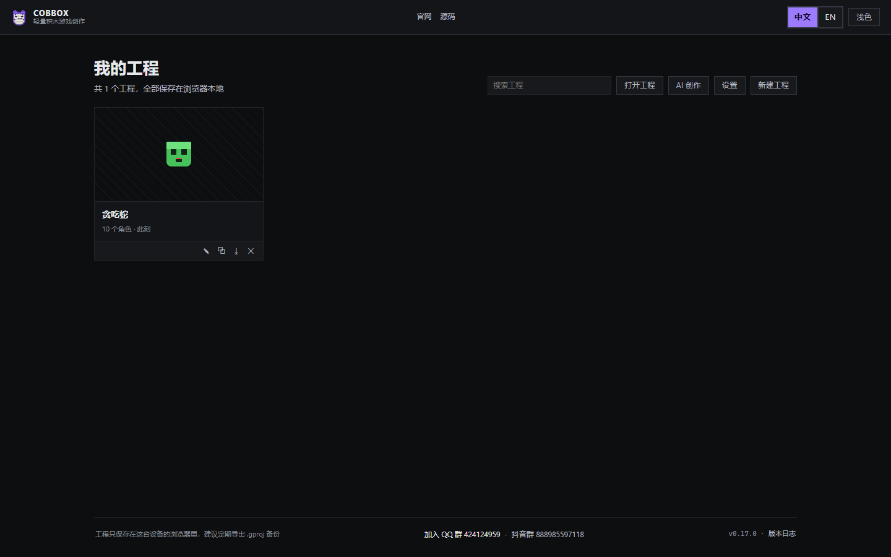
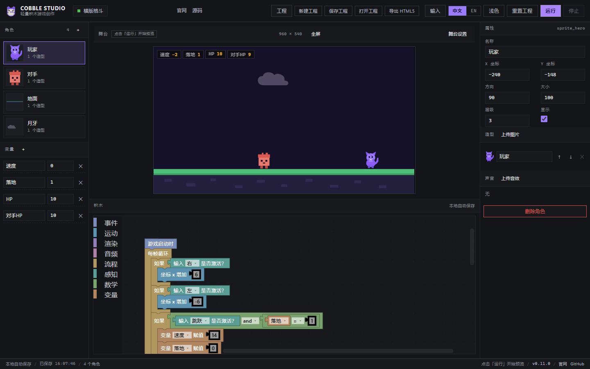
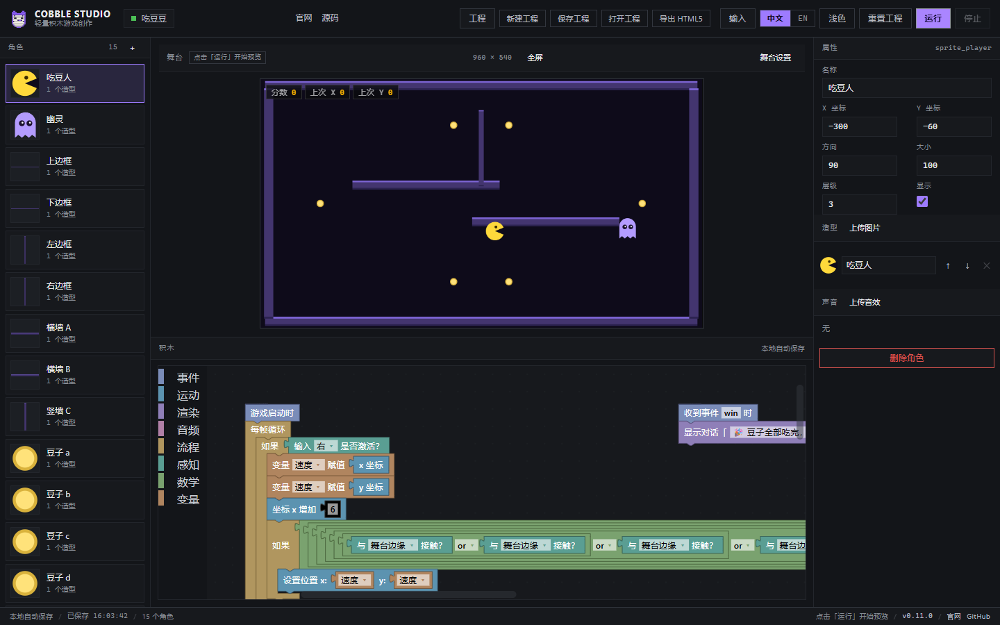
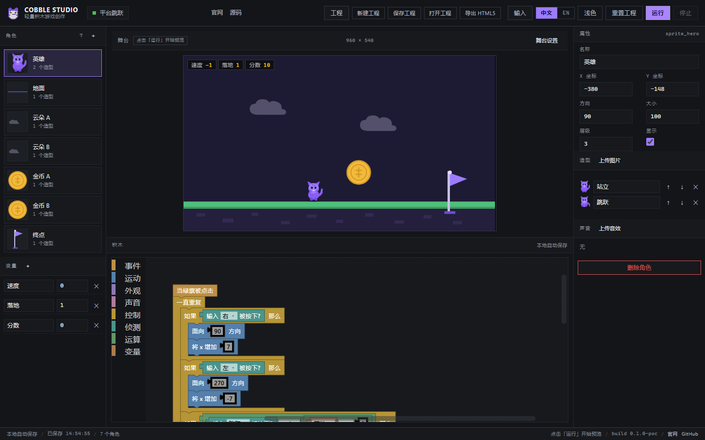
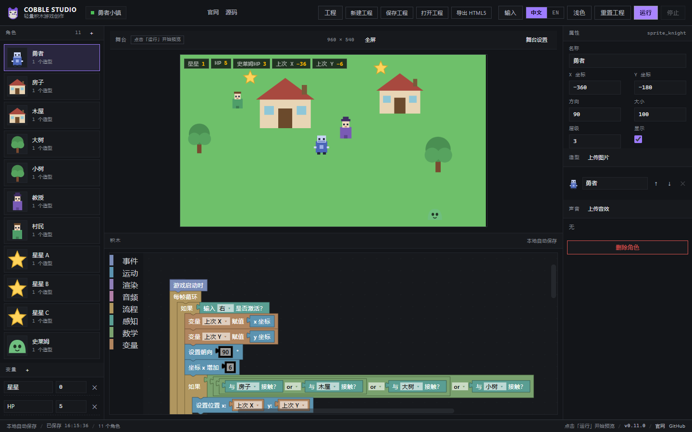

01
积木编程Block programming
51 种积木覆盖事件、运动、外观、声音、控制、侦测、运算与变量，Blockly 工作区直接编译为引擎无关的 IR。 57 blocks across events, interaction, motion, rendering, audio, flow, sensing, math and variables — compiled from Blockly into an engine-agnostic IR.
P0 · M0 可运行原型P0 · working M0 prototype
轻量、跨端的积木游戏创作平台。拖积木 → 编译成运行时指令 → 立刻在浏览器里试玩。桌面、平板、手机都能用。 A lightweight, cross-device block-based game maker. Snap blocks, compile to runtime instructions, play right in the browser — on desktop, tablet and phone.
在线演示分两个通道：最新稳定版与测试版（常规小更新先上测试版，只有在线体验，不打包桌面版与安卓版）。 Two live channels: latest stable and the beta demo — small updates land in beta first; beta is web-only (no desktop or Android builds).

Features
从第一块积木到能玩的作品，尽量少的概念、尽快的反馈。 Few concepts, fast feedback — from the first block to a playable game.
01
51 种积木覆盖事件、运动、外观、声音、控制、侦测、运算与变量，Blockly 工作区直接编译为引擎无关的 IR。 57 blocks across events, interaction, motion, rendering, audio, flow, sensing, math and variables — compiled from Blockly into an engine-agnostic IR.
02
舞台内嵌 Phaser 4 运行时，点「运行」立刻试玩；同一套运行时也被打进「导出 HTML5」的单文件里。 A Phaser 4 runtime is embedded in the stage. Hit Run to play immediately — the same runtime is bundled into the single-file HTML5 export.
03
触屏布局自动切换：底部标签页、舞台下方的摇杆与按钮手柄、角色快捷条；粗指针设备才显示手柄，桌面保持三栏。 Touch layout switches automatically: bottom tabs, a joystick + button pad docked under the stage, and a quick sprite strip. Desktop keeps its three columns.
04
全站零圆角，积木使用自定义渲染器压平圆角与顶帽，走低饱和配色，长时间编辑不刺眼。 Zero border radius everywhere. A custom Blockly renderer flattens corners and hats, with a muted palette for long editing sessions.
05
界面文案全部走 i18n，积木与工具箱跟随语言；作品内的角色名、变量名属于内容，不随界面翻译。 Every UI string is an i18n key; blocks and toolbox follow the locale. Sprite and variable names are content and are never translated.
06
无需登录，编辑内容自动保存到浏览器；账号、云端与社区分享在路线图中，当前不依赖任何后端。 No sign-in. Work is autosaved in the browser. Accounts, cloud and community sharing are on the roadmap; today there is no backend.
Screens









窄屏自动切成单栏：底部「舞台 / 积木 / 角色 / 属性」四标签，舞台页带方向键与角色快捷条，横屏时舞台与方向键并排；积木编辑器支持双指缩放。 Narrow screens collapse into a single column with four bottom tabs (stage, blocks, sprites, props), an on-screen D-pad and a sprite strip; landscape puts the stage next to the D-pad, and blocks support pinch zoom.
Download
Windows 与安卓安装包由 GitHub Releases 提供，均为 v0.12.3 稳定版构建；作品保存在本机，工程以 .gproj 落盘（桌面版），离线也能玩。 Windows and Android builds ship through GitHub Releases, both from the v0.11.0 stable build. Projects live on your machine and desktop installs store them as .gproj files — fully offline.
Windows
装到当前用户目录，开始菜单出现「Cobble Studio」；工程自动保存到应用数据目录。 Installs to your user profile and adds Cobble Studio to the Start menu. Projects autosave into the app data folder.
下载安装版Download installer ↓Windows
单文件绿色版，双击即用；请放在纯英文路径下（中文路径会导致 WebView2 无法创建窗口）。 Single-file, no install. Keep it on an ASCII-only path — WebView2 cannot create the window from a non-ASCII folder.
下载便携版Download portable ↓Android
适用于 Android 6.0 及以上；因为是调试签名，安装时需要允许「未知来源」，正式上架版本会换成发布签名。 Android 6.0+. It is debug-signed, so allow installs from unknown sources; a release-signed build will follow when it hits the store.
下载 APKDownload APK ↓安装包未做代码签名：Windows 首次运行可能弹出 SmartScreen 提示，点「更多信息 → 仍要运行」即可。全部版本历史见 GitHub Releases。 Builds are not code-signed: Windows may show a SmartScreen prompt on first run — choose “More info → Run anyway”. See all versions on GitHub Releases.
Roadmap
积木编辑 → 编译 → 运行 → 保存工程 → 素材与角色管理 → 模板与新建工程 → 工程管理页 → 单文件导出 → 4 款完整示例游戏 → 桌面安装包 / 安卓 APK 全部打通，稳定版 v1.0 收尾中。 Edit → compile → run → save → asset editing → templates → project hub → single-file export → four full demo games → desktop installer / Android APK all work; v1.0 polish is underway.
积木编辑、IR 编译、固定 60Hz 解释器、Phaser 4 舞台、深浅主题、中英切换、触屏布局、本地自动保存。 Block editing, IR compiler, 60 Hz fixed-step interpreter, Phaser 4 stage, themes, locales, touch layout, autosave.
保存/打开工程，积木脚本随文件带走；桌面顶栏与手机舞台页都有入口，打开后立刻可继续编辑。 Save and open projects with their block scripts. Entry points on desktop and mobile; editing resumes right away.
上传图片与音效，新建/删除角色，造型可改名与排序，变量与舞台背景、尺寸都能在编辑器里调整。 Upload images and sounds, add or delete sprites, rename and reorder costumes, edit variables plus stage background and size.
一键把工程编译成运行时指令，连同播放器与素材内联成一个 HTML 文件：双击即玩、离线可用，文件里带变量 HUD 与官网链接。 One click compiles the project into runtime instructions and inlines the player plus assets into a single HTML file — double-click to play offline, with HUD and a link back home.
新建工程弹层：空白工程，加上小猫吃金币、打地鼠、接苹果、平台跳跃、吃豆豆、勇者小镇、横版格斗七个可玩模板，选完直接进入编辑。 New-project dialog with a blank project plus seven playable templates (cat & coins, whack-a-mole, catch apples, platformer, dot muncher, knight town, side-scroller brawl) — pick one and start editing.
新增「换成指定造型 / x、y 坐标 / 方向 / 等待直到 / 移到某角色」等能力块；平台跳跃 v2 有 16 个角色、多平台与移动平台、巡逻史莱姆、HP 与回血、金币与终点判定。 Capability blocks (switch costume, x/y position, direction, wait until, go to sprite) power Platformer v2: 16 sprites, moving platforms, patrolling slimes, HP and healing, coins and win check.
启动即进入「我的工程」：多工程卡片、搜索、新建与 .gproj 导入，卡片上可重命名、复制、导出、删除；工程列表存在浏览器本地。 Launch lands on “My projects”: cards with search, new project and .gproj import, plus rename / duplicate / export / delete. The library is stored locally in the browser.
平台跳跃 v2、吃豆豆、勇者小镇 RPG、横版格斗都能直接玩；手机端换成舞台下方的摇杆 + 自定义按钮手柄，全屏按游戏横竖屏自动旋转。 Platformer v2, dot muncher, Knight Town RPG and a side-scroller brawler are all playable; phones get a docked joystick + custom-button pad, and fullscreen auto-rotates to the game orientation.
示例游戏深化（RPG 战斗、吃豆豆多关卡）、编辑器体验打磨、安装包签名与自动更新。 Deeper demos (RPG battles, multi-level dot muncher), editor polish, installer signing and auto-update.
Tauri NSIS 安装包（currentUser）与便携 exe、Capacitor 安卓 APK 都已构建：桌面版工程以 .gproj 落盘到应用数据目录，离线可用。 Shipped as a Tauri NSIS installer (currentUser) plus portable exe, and a Capacitor Android APK. The desktop build writes .gproj files to app data and works offline.
克隆、列表、自定义积木，精确像素碰撞；之后是账号、云端保存与作品社区。 Clones, lists, custom blocks, pixel-perfect collision — then accounts, cloud saves and a community gallery.
Get started
需要 Node.js 20+。不需要后端，不需要登录。 Requires Node.js 20+. No backend, no sign-in.
git clone https://github.com/ONGIKAN/cobble.git
cd cobble
npm install
npm run dev # http://127.0.0.1:5183Release log
当前稳定版 v0.12.3。按功能小版本迭代：常规小更新先进测试版在线演示，验证通过后晋升到正式在线演示。每个版本标注「稳定版 / 实验版」：实验版只发布在测试版演示通道，验证后再晋升稳定版。日期只显示相对时间（三天内 → 七天内 → 七天之前）。 Current stable release v0.12.3. Small releases ship to the beta demo first, then get promoted to the stable demo once verified. Every release is tagged Stable or Experimental: experimental ones ship to the beta demo only. Dates are relative only (within 3 days → within 7 days → more than 7 days ago).
示例游戏加固 + 手机触屏手柄重做Harder demo games + redesigned touch pad
桌面版原生工程文件 + 专业积木术语Native desktop project files + professional block terminology
全屏运行Fullscreen play
吃豆豆示例Dot muncher demo
能力块 + 平台跳跃Capability blocks + platformer
工程管理页 + 紫色豹猫品牌Project hub + purple leopard branding
输入事件 + Apache-2.0Input events + Apache-2.0
模板与新建工程Templates & new project
单文件 HTML5 导出Single-file HTML5 export
品牌 logo 与桌面 / 移动壳Logo and desktop / mobile shells
素材与角色管理Assets & sprites
可运行原型Working prototype